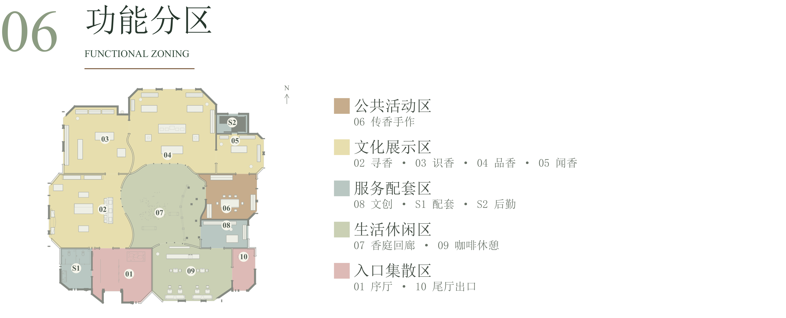
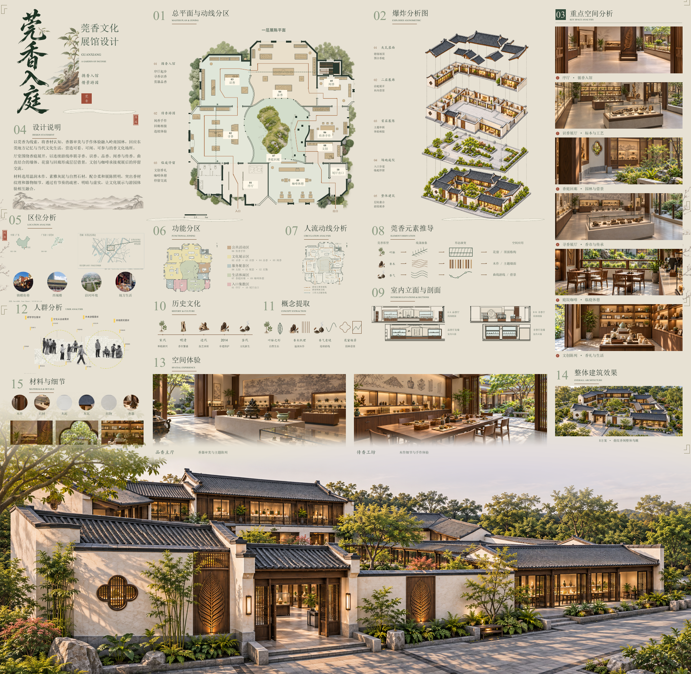
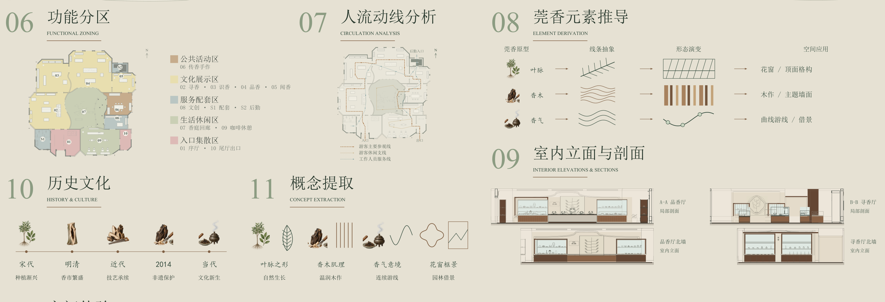
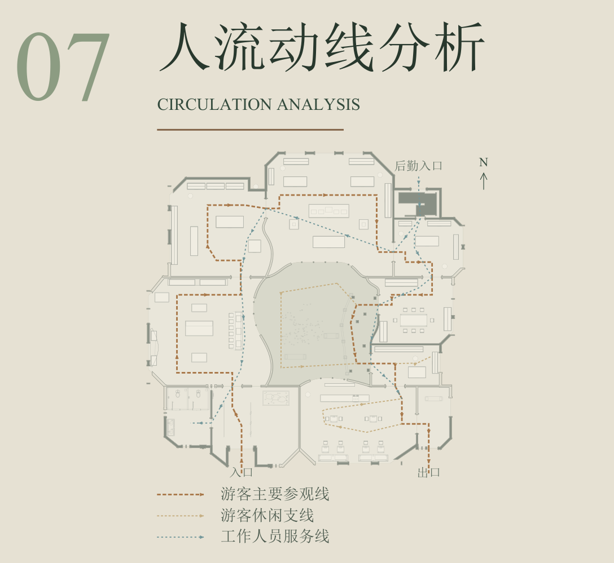
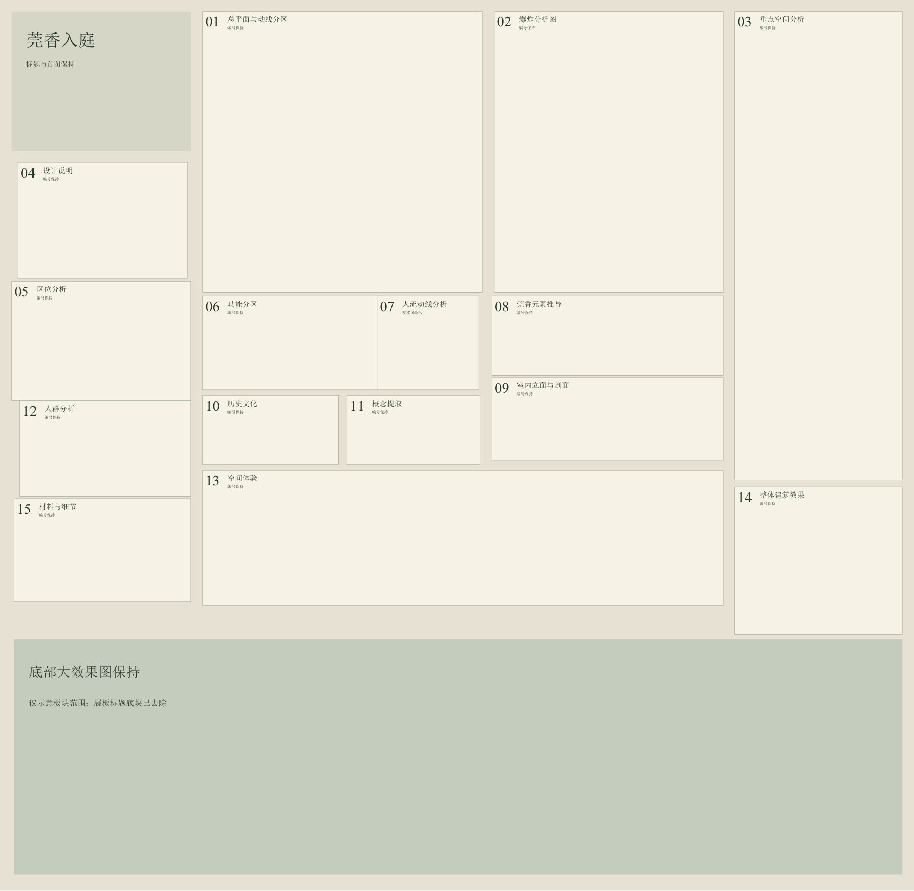

06 功能分区

158 × 154 cm · RGB · 300 dpi · 无出血
07人流动线分析整体向左移动1厘米；15个板块标题均去掉浅色底块，保留文字、编号和分隔线。其余图文、配色和路线保持上一版。
工作人员路线为本轮建议方案，沿现有后勤入口与门洞组织，部分通道与游客共用。图纸与模型空间不作改动，等待审核。
点击图片查看大图；细字与线稿请打开整板 PDF 放大查看。



主线沿既有展厅参观顺序展开；休闲支线联系庭院、文创与咖啡。工作人员由后勤入口进入，并使用现有连接通道。
请重点查看07左移后的间距和标题去底后的整体效果。现有房间号、效果图小序号、爆炸层号和剖面代号均保留。

| 新编号 | 板块 | 原编号 |
|---|---|---|
| 01 | 总平面与动线分区 | 06 |
| 02 | 爆炸分析图 | 08 |
| 03 | 重点空间分析 | 09 |
| 04 | 设计说明 | 01 |
| 05 | 区位分析 | 02 |
| 06 | 功能分区 | 14 |
| 07 | 人流动线分析 | 新增 |
| 08 | 莞香元素推导 | 13 |
| 09 | 室内立面与剖面 | 10 |
| 10 | 历史文化 | 03 |
| 11 | 概念提取 | 05 |
| 12 | 人群分析 | 04 |
| 13 | 空间体验 | 07 |
| 14 | 整体建筑效果 | 12 |
| 15 | 材料与细节 | 11 |
两张局部图提供透明 PNG 与矢量 PDF / SVG。其余独立素材保留在上一版本本地档案，本页整板已经使用新编号。